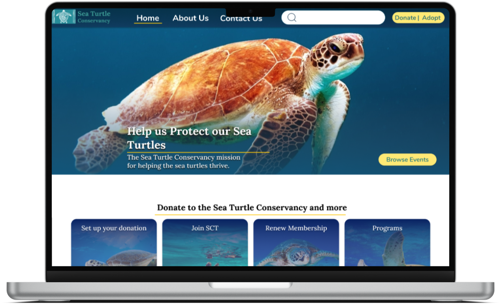
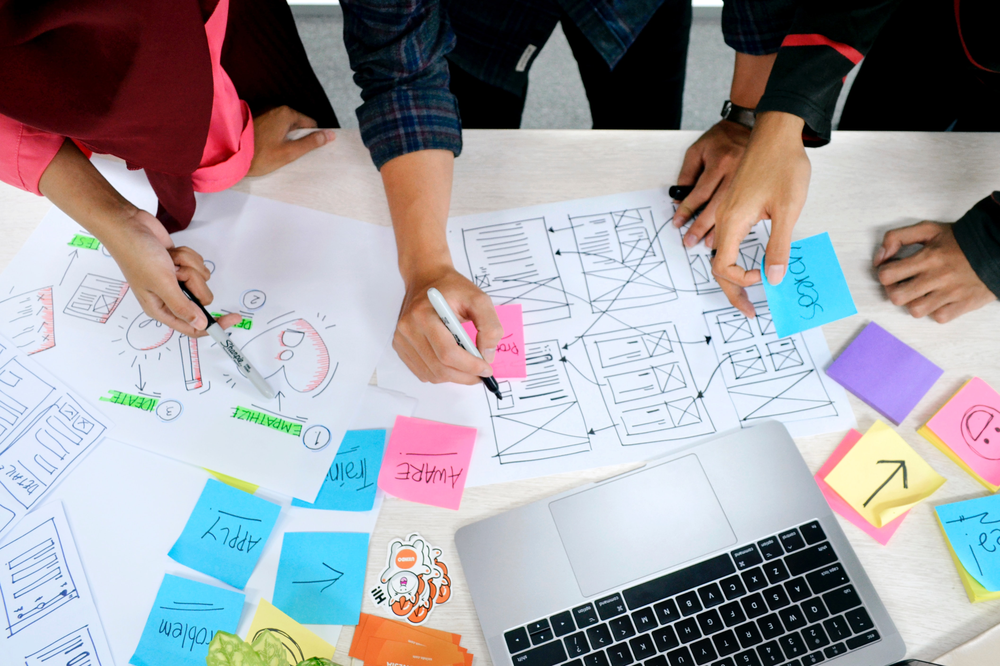
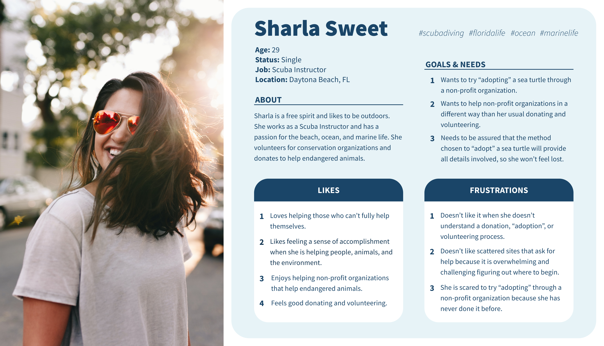
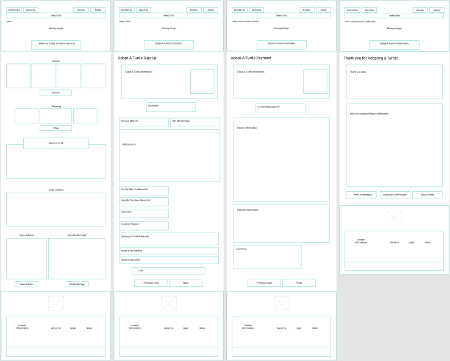
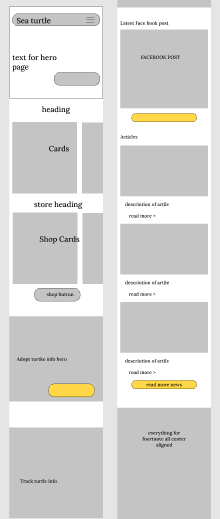
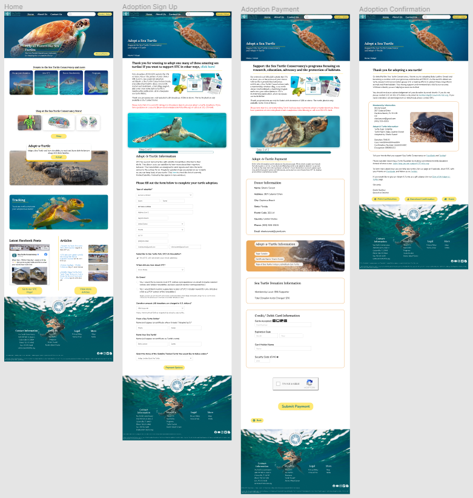
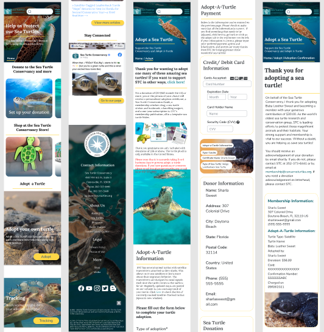
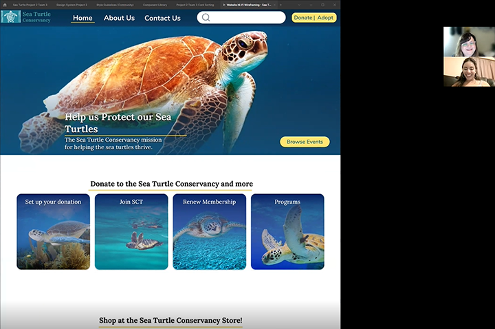

Sea Turtle Conservancy
Nonprofit Website Redesign
Project Description: Redesign a website for a nonprofit organization and execute the user experience (UX)/user interface (UI) design process to create a high-fidelity responsive web design (RWD) solution through a clickable UI prototype.
Project Overview
Sea Turtle Conservancy Original Website (conserveturtles.org)

The Problem
The Sea Turtle Conservancy website is not user-friendly. It does not straightforwardly convey its message or promote donating, adopting, or volunteering with the organization, possibly reducing interest for users to contribute to the Sea Turtle Conservancy.
The Solution
We believe redesigning the sea turtle conservancy website for people who want to protect sea turtles will achieve more straightforward navigation for those who are turned away by the complexity of the current website.
My Team
Ralph Chery, Derek Hickman, Amari Manning, and Amy Velazquez
My Role
Team Lead: Conducted stand-up meetings, assigned tasks, and tracked progress in Trello. Created the design system for our project, the User Persona, and other graphics for our slides and assisted with the wireframing on the website and mobile designs. I assisted with developing the user research and interview plans and conducting user research, user interviews, and user testing.
Tools Used
Figma, FigJam, Google Forms, Google Surveys, Google Suite, Zoom, Slack, and Trello
User Research
User Research
We conducted:
- 5 user interviews
- A survey using Google forms
- A paid Google survey
We wanted to learn:
- What are users’ experiences with working with non-profit organizations?
- What made users agree to work with these organizations?
- How did users feel when working with these non-profit groups?
- What was the process to donate, volunteer, or adopt?
User Interviews
- Most users have either donated, volunteered, or done both.
- Most users had not adopted an animal before.
- Users worked with their organizations because it made them feel good to give back, and benefited their community.
- Some users had trouble understanding what the purpose of the website was and felt that it took time to get through the information on the homepage.
- We conducted a 1-minute user test of the existing STC website during the interviews confirmed our findings with our initial heuristic evaluation.
User Surveys
- Out of 15 participants, 78% Donated, 64% Volunteered, and 14% adopted from general nonprofits.
- Out of 14 participants, 77% gave to a conservation group because of a personal story. 19 % gave because of photos and videos they saw.
- Out of 13 participants, 56% of users wanted to see that a conservation group was a good cause, 41% wanted to see customer reviews, and 35% wanted to know the reputation of the group.
User Persona
User Persona: Sharla Sweet
We used the ideation method and an affinity diagram to analyze the results of our user interviews and surveys. We created a user persona based on those results.
The user persona we created is Sharla Sweet who is a single 29-year-old Scuba instructor. A few of her goals are to eventually adopt a sea turtle, wants to get more involved with non-profits in a different way besides her usual donating and volunteering, but a few of her limitations is that she doesn't like scattered sites that ask for help because they are overwhelming and challenging to figure out where to begin.
User Journey

User Journey Map
Then from the user storyboard, we were able to come up with a journey map that would take us through the experience a user might have that led them to, in this case adopting.
User Flow
The user flow we used for our prototype was for the task of adopting an Indigo Leatherback Sea Turtle as a $56 supporter with a MasterCard.
Design System & Wireframes

Design System
We iterated the design system for the final prototype. We used the feedback from each user test and made modifications to improve the design and functionality of our design.
Desktop Lo-Fidelity Wireframes
This is the wireframe for the desktop version of our redesign. Our user flow is focusing on the adopt-a-turtle pages.
Mobile Lo-Fidelity Wireframes
This is the wireframe for the mobile version of our redesign. Our user flow is focusing on the adopt-a-turtle pages.
Hi-Fidelity Desktop Prototype
For our final prototype, we added a captcha button on the payment page and making sure all the buttons were consistent. We also fixed some minor issues we discovered during the user test. The users who tested on this one said that tasks were easy to follow and find, also that the appearance of the site was very nice and appealing.
Hi-Fidelity Mobile Prototype
After feedback from the user tests, we made reorganized the information boxes on the payment page and added more buttons to the pages to make the adoption process easier.
User Testing
User Testing & Iterations
After seven user tests and four iterations of the desktop and mobile prototypes, the feedback we received was very positive. Some suggestions for improvement we received were:
- Reduce the wordiness on the adoption and payment pages
- Include a testimonial section
- Create a more in-depth style guide for consistency across the mobile and desktop versions.
Feedback & Future Plans
Survey Feedback
Towards the end of the project, we obtained our paid Google survey results and learned that users are motivated primarily by personal stories, customer reviews, organization reputation, and photos. We realized that emotions play a large part in motivating users to donate, volunteer or adopt with conservancy organizations. Since we learned this at the end of our project, we weren't able to implement this understanding in our class project.
However, I plan to incorporate these features in the next iteration:
- Add testimonials and customer reviews to build trust and engage the users’ emotions and motivation with personal stories.
- Highlight the reputation of the STC Guidestar (guidestar.org) Platinum Seal of Transparency to build confidence in STC as an international nonprofit 501(c)3 organization, with a link to the Sea Turtle Conservancy Guidestar page.
- Add more photos and videos of volunteers, events, and sea turtles with personal stories from volunteers and staff.
Presentation Feedback
We received positive feedback during our group presentation and suggestions to improve the consistency between the desktop and mobile designs. In order to implement these changes I am working on:
- Creating a complete design system and style guide to ensure consistency across desktop and mobile designs.
- Updating the desktop and mobile prototypes to improve the functionality and user experience of both prototypes.